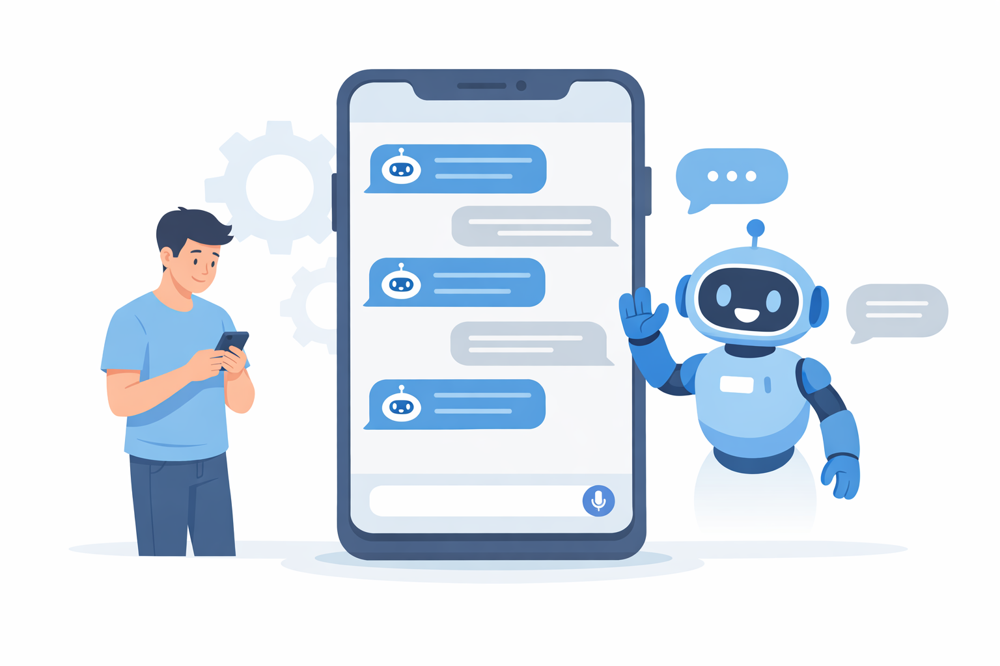
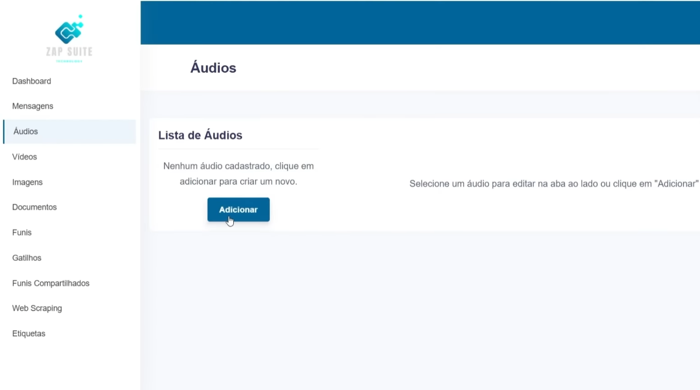

Leads não respondidos
A falta de um chatbot de atendimento faz com que clientes ignorados pela demora procurem a concorrência rapidamente.
Responda seus clientes na hora, mesmo quando você estiver ocupado. Automatize conversas, qualifique leads e feche mais vendas no WhatsApp sem precisar aumentar sua equipe.

Enquanto você responde mensagens manualmente uma a uma, seus concorrentes que já usam automação de WhatsApp estão fechando vendas.
A falta de um chatbot de atendimento faz com que clientes ignorados pela demora procurem a concorrência rapidamente.
Quanto mais você demora pra responder, menor a chance de fechar a venda. No WhatsApp, quem responde primeiro quase sempre ganha.
Mensagens acumuladas, clientes esquecidos e nenhuma organização. Isso faz você perder oportunidades todos os dias sem perceber.
A Zapsuite é um chatbot para WhatsApp desenvolvido para automatizar o atendimento e as vendas de empresas. Com a automação de processos que antes eram manuais, a plataforma ajuda a qualificar leads de forma mais eficiente, organizar conversas e escalar o envio de mensagens no WhatsApp.
Ideal para empresas que dependem do WhatsApp no dia a dia, o sistema garante respostas 24 horas por dia. Com fluxos personalizáveis, é possível criar um atendimento mais ágil e consistente, com envio de áudios automatizados e indicadores de digitação que deixam a comunicação mais fluida.
Na prática, a Zapsuite transforma o WhatsApp em um verdadeiro CRM e canal de vendas, ajudando a evitar mensagens não respondidas e melhorando o relacionamento com os clientes.
Transforme o WhatsApp em um canal de vendas e atendimento mais eficiente, com recursos avançados de automação.
Envie campanhas para vários clientes ao mesmo tempo no WhatsApp. Compartilhe textos, imagens, vídeos e arquivos de forma prática, alcançando toda a sua base com poucos cliques.
Envie áudios pré-gravados que são entregues de forma natural na conversa. Isso torna o atendimento mais dinâmico e ajuda a aumentar o engajamento com o cliente.
Crie funis de vendas inteligentes no WhatsApp. O chatbot identifica os leads mais preparados e direciona as melhores oportunidades para o seu time comercial.

O layout da Zapsuite é intuitivo e fácil de navegar. Se você já usa o WhatsApp no dia a dia, vai conseguir criar automações e funis de atendimento sem precisar de conhecimento técnico.
Recupere vendas automaticamente enviando mensagens para clientes que demonstraram interesse, mas não finalizaram a compra.
Organize o atendimento da sua equipe em um único número de WhatsApp, facilitando a distribuição das conversas e o acompanhamento dos clientes.
Aumente sua base de leads salvando automaticamente os contatos que chegam pelos seus anúncios e campanhas.
A Zapsuite foi desenvolvida para empresas que usam o WhatsApp como canal de atendimento e vendas e querem ganhar escala com automação.
Lojas, clínicas e prestadores de serviço que querem organizar o atendimento no WhatsApp e responder clientes com mais agilidade, mesmo fora do horário comercial.
Ideal para quem vende online e precisa automatizar conversas no WhatsApp. Facilite a recuperação de boletos, Pix e carrinhos abandonados, mesmo com alto volume de mensagens.
Perfeito para empresas com grande volume de leads. Organize o atendimento, distribua conversas entre atendentes e evite gargalos com a automação no WhatsApp.
Comece hoje mesmo a automatizar seu WhatsApp e responda todos os seus clientes sem esforço. Escolha o plano ideal para o seu momento.
Ideal para negócios locais iniciando com automação.
🛡️ 7 dias de garantia
Acelere os resultados com ferramentas de qualificação profunda.
🛡️ 7 dias de garantia
Para agências e empresas de alto volume de leads.
🛡️ 7 dias de garantia
Encontre respostas rápidas e tome a decisão certa para a automação do seu WhatsApp.
Não. A Zapsuite foi criada pensando na facilidade de uso do empreendedor. Se você usa o WhatsApp no dia a dia, será capaz de criar funis complexos com nosso construtor de blocos visuais (drag and drop) sem digitar uma linha de código.
Sim. O atendimento automático funciona de forma ininterrupta, garantindo que seu cliente receba respostas instantâneas, não importando a hora do dia ou o dia da semana.
Sim. O sistema exibe status de digitação e gravação de áudio para tornar a conversa mais fluida e natural.
Sim. Especialmente no Plano Anual, oferecemos conexões via webhook e API para integrar leads do WhatsApp com ferramentas de marketing, CRM ou sistemas de pagamento.
Sim. Você possui 7 dias para testar a ferramenta e, caso não goste por qualquer motivo, pode solicitar 100% do seu dinheiro de volta.